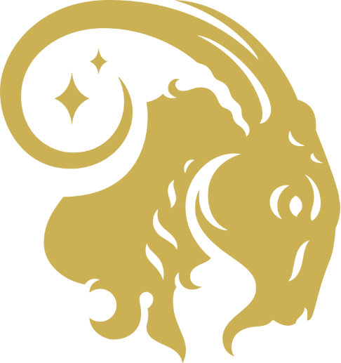

Capricorn
Symbol: Goat
Element: Earth
Characteristics: Disciplined, ambitious, practical
Personality Traits: Capricorns are known for their discipline and managerial skills. They are responsible and persistent but can sometimes be know-it-alls.